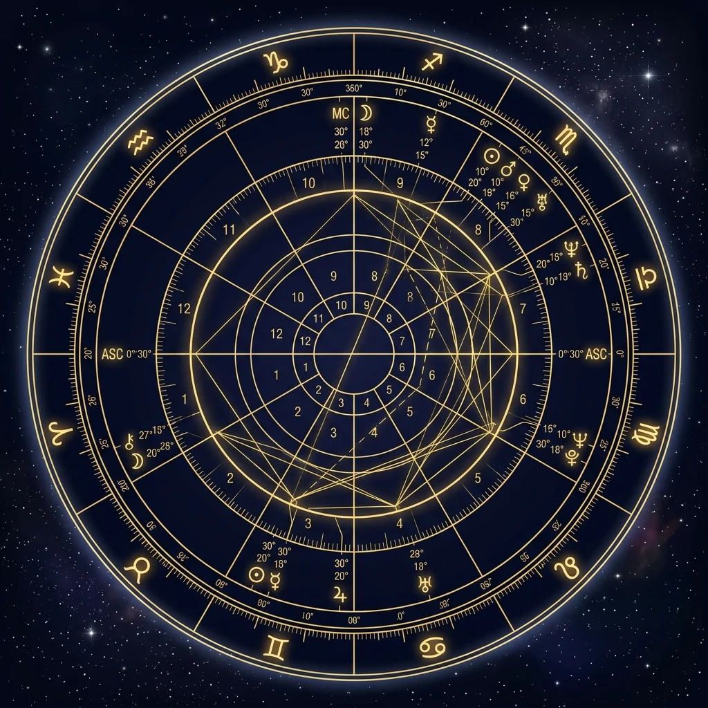

The Aura Astrology Philosophy
We combine classical systems with precise planetary algorithms, providing a clear map of your coordinates without fatalistic constraints.
Meet Our Certified Team
Certified experts dedicated to accurate interpretations and ethical guidance.
Aria Thorne
Senior Synastry Reader
Specializes in Western relational synastry. Over 12 years of clinical chart analysis. NCGR-PAA Level IV certified.
David Vance
Vedic Jyotish Specialist
Trained in Kerala, India. Integrates sidereal maps and Dasha lifecycle timelines to analyze career goals.
Chloe Park
Vocation & Transit Analyst
NCGR Associate. Mapped over 5,000 transit reports. Specializes in Saturn Return consultations.
Accredited Credentials
We follow standard guidelines set by professional associations.
ISAR Membership
Certified by the International Society for Astrological Research, adhering to ethical standards.
NCGR-PAA Certification
Subject tests on classical Western Placidus coordinate calculations and system mechanics.
Vedic Jyotish Parishad
Sidereal calculation certifications, specializing in Lahiri Ayanamsa coordinate configurations.
Ethical Astrology Practices
We prioritize non-fatalistic interpretations, showing opportunities and cycles without imposing rigid constraints.
We view birth charts as maps of potential. Planets show challenges and strengths; they do not dictate outcomes.
Our computations use exact coordinate angles, minimizing mathematical margins of error.

Featured In
Aura Integrity
"Aura Astrology respects structural sciences without succumbing to fatalistic clickbait. Highly recommended."
— Dr. Julian Vance, Astronomer & Astrological Researcher
Connect With Your Cosmic Map
Generate a complete natal report mapped to your birth location, and consult with our certified team.